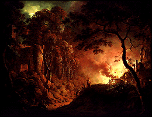

The Minneapolis Institute of Arts
Main Menu ~ Permanent Collection List ~ Interactive Museum Maps ~ Back ~ Next
European 18th-Century Art
 (c) 33k
Sir Joshua Reynolds, Thomas Gainborough, and Sir John Everett Millais are represented in this collection of portraits, landscapes, and religious and allegorical subjects.